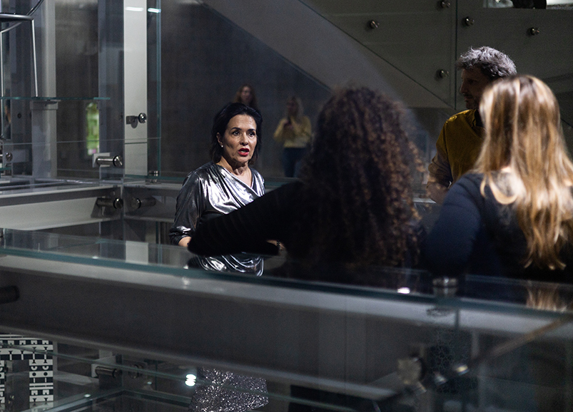

WHAT IS IAMAIR?
IAMAIR is an agency based in the Netherlands, working at the intersection of art performance and cultural mediation. Our aim is to facilitate interaction with audiences in cultural institutions through unexpected narratives co-created with artists and performers, building bridges between cultural institutions and international and local communities. We work with diverse cultural makers, connect artists, mediators and performers with people beyond the field of art, and facilitate the co-creation of disruptive interventions in socially normative contexts.
ARTISTS AND AUDIENCES AS KNOWLEDGE CREATORS
Traditional dynamics in cultural institutions often portray audiences as passive recipients of education and artists as almost godly inspired figures, which upon not accurately reflecting the reality of contemporary artists' lives, also widens the gap between cultural institutions and society. Consequently, museums grow increasingly empty and disconnected from their collective mission. IAMAIR seeks to shift these dynamics by placing artists and audiences at the forefront of knowledge creation.
A COMMUNITY OF AUDIENCES
Recognizing the need for cultural institutions to engage more audiences, our agency represents a community of audiences for various types of cultural endeavors. They include cultural makers, artists, actors and performers, all potential participants in the co-creation of our interventions. They infiltrate museums, galleries, exhibitions, and heritage sites, seamlessly melting within the landscape to whisper other stories.
BLURRING BOUNDARIES BETWEEN FICTION AND REALITY
Our interventions take the form of infiltrative role-play performances based on site-specific parameters, such as art works, architecture, stakeholders and policies. Operating on the border where fiction meets reality, we seek to break the wall between visitors and performers, between reality and performance. Our practice is intentionally anchored in the uncertainty of the responsive environment, embracing serendipity and ambiguity as vehicles for research, improvement and discovery.
ARTISTIC RESEARCH IN PROGRESS
This agency is part of an artistic research in progress. Improvements and changes are in development, and we are indefinitely working on a new version of this website. Our pilot performance took place at Depot Boijmans in Rotterdam on 2 March 2024, and is being revised for its final version. We are also looking for new partners interested in joining the project. Help us improve by sending questions, feedback, and comments to contact@iamair.nl.
For cultural makers
Everybody makes culture and everybody can take part in our community of audiences. We welcome you to join, no matter your background, education, appearance, or beliefs. It’s free and requires no prior experience or talent. Become a member to get special updates and to be invited in our events.
For cultural institutions
We work with all kind of institutions and their representatives: museums, galleries, curators, artists-run-space, events, art fairs, etc. Contact us for a free meeting with our mediator to discuss the possibilities of a collaboration and the parameters of a site-specific intervention in your institution.